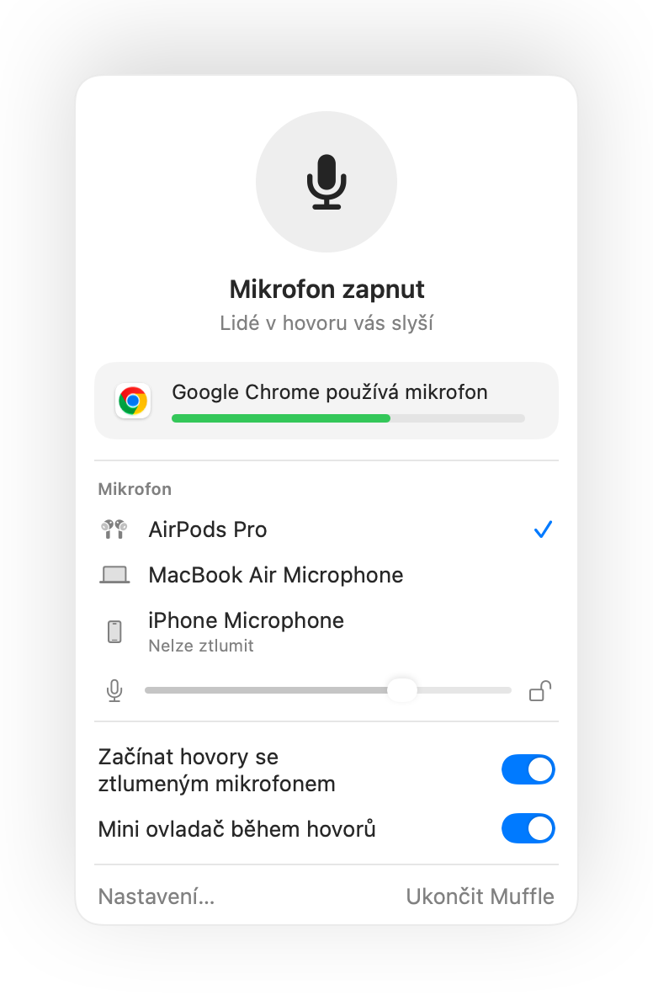

Jak ztlumit Google Meet pomocí AirPods na Macu
Na iPhonu stisknutí stopky AirPods hovor ztlumí. Na Macu však Google Meet běží v prohlížeči Chrome, a ten toto stisknutí webovým stránkám nepředává. Stisknete stopku, ozve se chybový tón a Meet váš hlas přenáší dál.
Muffle tento problém vyřeší pro každý videohovor v Meetu. Sám zachytí stisknutí AirPods a ztlumí mikrofon Macu, takže vás na schůzce nikdo neuslyší, ani když je panel na pozadí.
Vyzkoušet Muffle na 3 dny zdarmaJiž brzy v Mac App Storu
Ztlumte Google Meet pomocí AirPods
- Nainstalujte Muffle a po vyzvání zvolte „Povolit přístup k mikrofonu“.
- Připojte se k hovoru v Google Meet přes Chrome, Safari, Arc nebo Edge.
- Jedním stisknutím stopky AirPods mikrofon ztlumíte. Ikona Muffle zčervená.
- Dalším stisknutím ho zapnete. Odkudkoli můžete také stisknout Control-Option-M.

- Meet může stále ukazovat zapnutý mikrofon, protože Muffle vypíná samotný hardware, nikoli tlačítko v Meetu. Dokud je ikona Muffle červená, nikdo vás neuslyší.
- Zapněte volbu „Začínat každý hovor se ztlumeným mikrofonem“, abyste se do každého hovoru v Meetu připojili ztlumení.
Časté dotazy
Proč stisknutí mých AirPods neztlumí Google Meet?
Chrome nepodporuje gesto ztlumení AirPods v macOS pro webové hovory, takže macOS nemá aplikaci, které by stisknutí předal. Muffle se touto aplikací stane.
Nestačí vlastní klávesová zkratka Meetu?
Zkratka Command-D v Meetu funguje jen tehdy, když máte otevřený panel s hovorem. Klávesová zkratka Muffle i stisknutí AirPods fungují z libovolné aplikace.